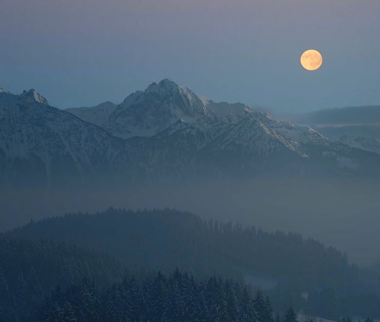
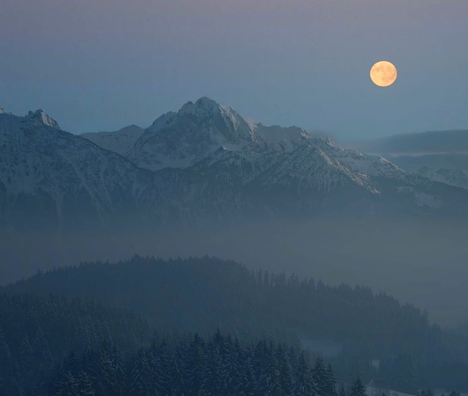

LAST FEATURED STORY
LAST MONTH’S FEATURED STORY
HAZY FULL MOON OF APPALACHIA
March 2nd 2020 by John Appleseed
The dissected plateau area, while not actually made up of geological mountains, is popularly called "mountains," especially in eastern Kentucky and West Virginia, and while the ridges are not high, the terrain is extremely rugged.